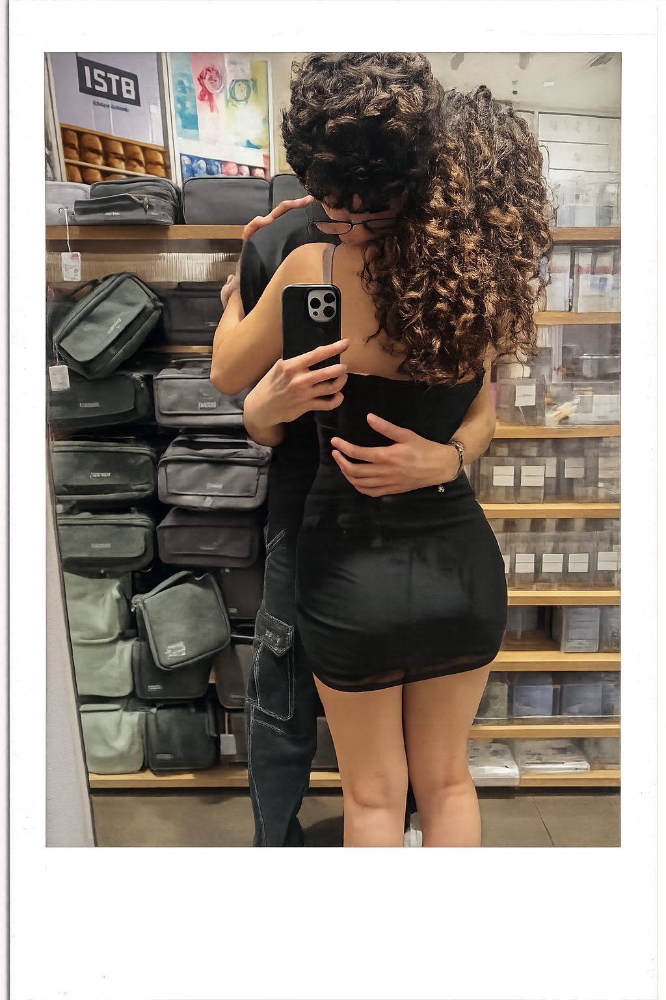

Desde que empezamos a hablar, me duele cada día que paso sin estar a tu lado. Cada momento contigo vive en mi mente, haciéndome feliz y sacándome una sonrisa sin mi permiso. No sé cómo será el futuro, pero lo único que me importa es que sea junto a ti, hermosa. Eres mi lugar favorito y mi persona favorita.
Cuando te vuelva a ver te voy a llenar de besos esos labios y esos cachetitos tan lindos que tenes 😝.